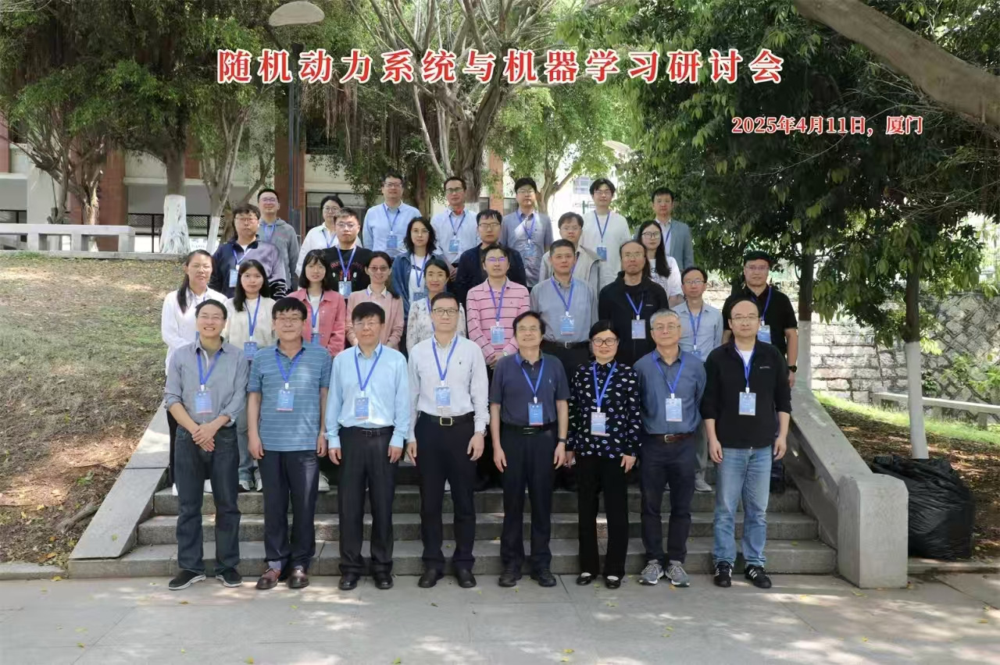
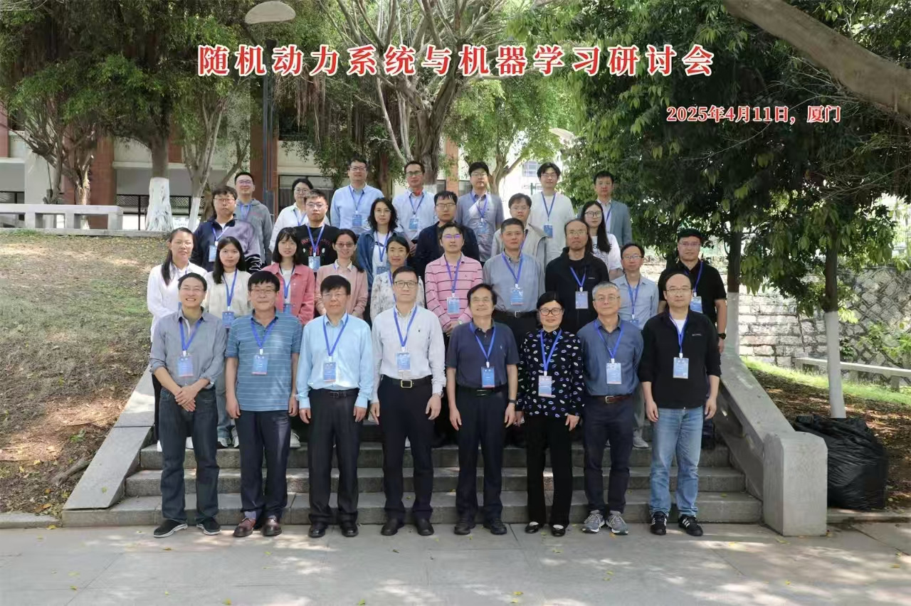
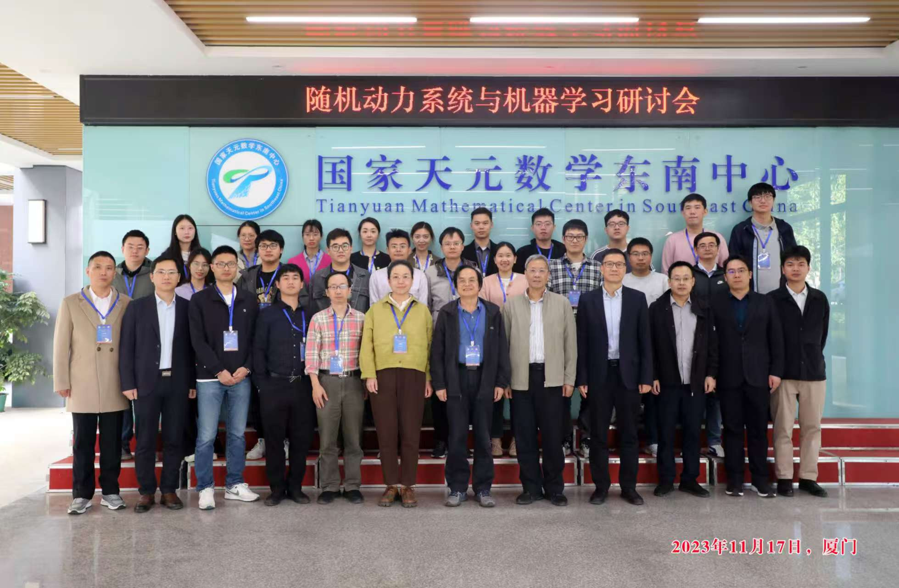

第三届：SD-AI 研讨会
📍 中国 · 厦门 (国家天元数学东南中心)
会议在厦门大学圆满召开。来自清华大学、武汉大学、香港科技大学等20余所高校的30余名专家学者参会。会议围绕随机动力系统和机器学习等新兴领域的最新研究成果展开研讨。
Stochastic Dynamics and Artificial Intelligence
国家天元数学中心主办的“随机动力系统与人工智能”系列会议，旨在汇聚顶尖学者，探讨随机动力系统、机器学习及其在生物物理、数据科学中的前沿交叉应用。
会议在厦门大学圆满召开。来自清华大学、武汉大学、香港科技大学等20余所高校的30余名专家学者参会。会议围绕随机动力系统和机器学习等新兴领域的最新研究成果展开研讨。
由国家天元数学东南中心举办。段金桥、陈晓鹏、朱玉峻等教授组织。会议涵盖贝叶斯神经网络、保结构随机动力系统算法等前沿议题，共安排19场学术报告。
系列会议的开端。会议聚焦随机偏微分方程、随机动力系统的理论方法及其在生物物理中的应用，深入讨论了有效动力学与数据科学交叉研究的前沿问题。